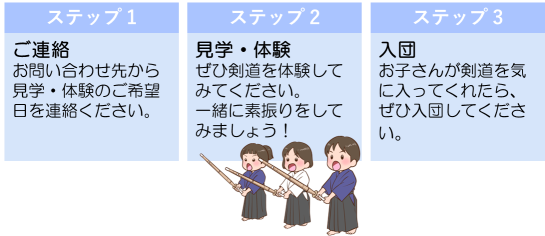

入団案内
新入団員を募集しています。
いつでも見学・体験・入団できます。
一緒に楽しく剣道しませんか？
稽古日時・場所
火曜 19:00-20:30 更北中学校
木曜 19:00-20:30 広徳中学校
土曜 18:00-20:00 青木島小学校
日曜 17:00-19:00 青木島小学校
※時間・場所は、変更になる場合があります。
青木島小学校
更北中学校
広徳中学校
対象
未就学児(年長ぐらい)
小学生
中学生
青年部(高校生、大人)
いずれも初心者大歓迎です。
青年部には、お子さんの保護者(初心者、リバ剣)も参加しています。
会費
未就学児 月額会費0円 + スポーツ安全保険料
小学生 月額会費1500円 + スポーツ安全保険料
中学生 月額会費1500円 + スポーツ安全保険料
青年部 月額会費0円 + スポーツ安全保険料
※入会金は不要です。
※月額会費は、3ヶ月ごとに集金します。
※月額会費には兄弟優遇制度があります。
※通常の稽古以外の活動(例 大会参加、級審査)のため、別途費用がかかります。
剣道具など
未就学児・小学生に対して、剣道具(面、胴、垂)、剣道着と袴をレンタルしています。
小手は、各自で用意してください。
未就学児・小学生・中学生に対しては、入団時に竹刀を1本プレゼントします。
剣道具は、個人で購入される場合3～4万円ぐらいです。
入団～剣道具の流れ(小学生の場合)

見学・体験のときは、動きやすい服装、手ぶらでお越しください。
簡単な剣道の稽古を、団の子どもたちと一緒に体験してください。
体験で使用する竹刀は、団で準備します。
怪我をしてしまう可能性があるため、団の子どもたち同様に注意することがあります。
見学・稽古は何度来ていただいても大丈夫です(無料です)。
1度体験しただけではわからないと思いますので、何度でも体験してください！
遊びの要素を取り入れた稽古もやります
新聞紙切り(スマホの場合はこちらをクリックしてください)
稽古への参加
お子さんの他の習い事もあるため、ご家庭の都合にあわせてご参加ください。
級・段審査
小学生は、年に1回級審査を受けることができます。
小学生の間に、最高で1級を取得することができます。
段審査(初段以降)は、中学生から受けることができます。
級・段審査では木刀の審査もあり、団では木刀の稽古も実施しています。
大会・練成会
県内外で開催される各種大会・練成会に団として参加しています。
大会・練成会への参加は希望制になります。ご家庭・お子さんの無理のない範囲でご参加いただけます。
※練成会は、複数の団体が合同で行う稽古会・練習試合です。
剣道体験会
例年、4月に剣道体験会を開催しています。
2024年4月の体験会を計画中です。
2023年4月の剣道体験会のチラシ
SNS
Instagram、Facebookでも情報を発信しています。
SNS・ホームページは、団員のプライバシーに配慮して運営しています。
お問い合わせ
見学・体験をご希望の方は、お気軽に下記までご連絡ください。お待ちしています！
青木島剣道少年団 aokijimakendosyonendan@gmail.com
Instagram、FacebookのDMでも受け付けています。
ホームへ
団の紹介、活動方針
中学校部活動の地域移行
青年部